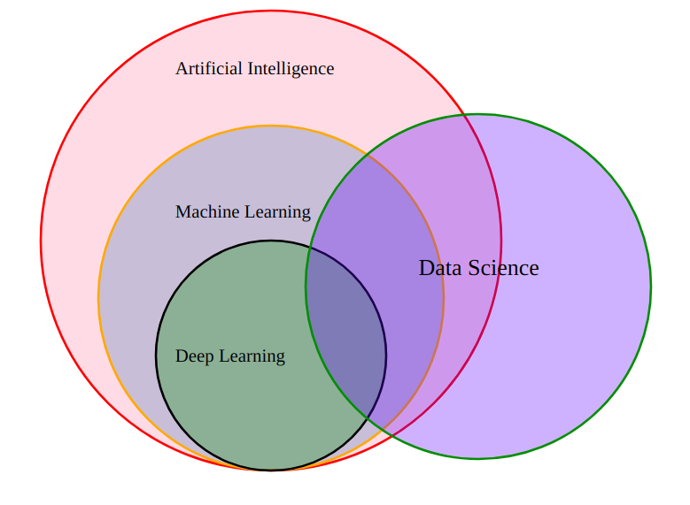
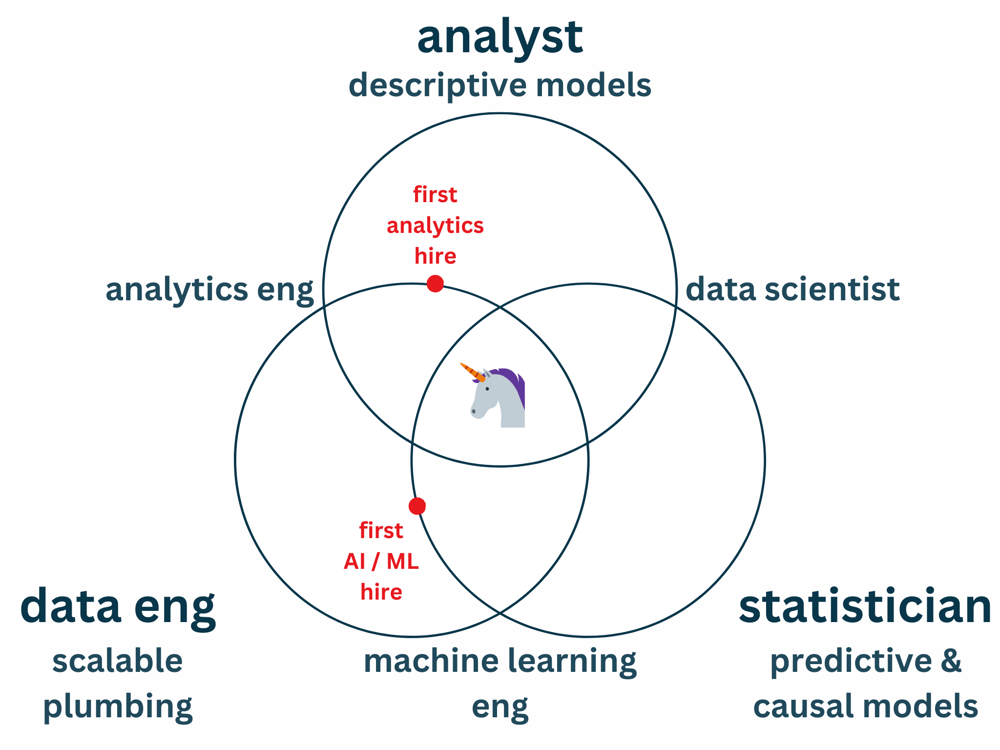

About you
Ideal: Some product-market fit; seeing opportunities in product analytics or advanced AI/ML
Quick poll:
- Name
- Company
- What are you hoping to learn?
About me
Helping climate & nature tech startups ship data-intensive solutions
Career highlights:
- Software Engineering (BSc) / Data Science & Engineering / Artificial Intelligence (PhD)
- 10+ years with startups & scaleups (after big tech)
- ×4 times first Data-to-AI hire
- Indie consulting: portfolio approach to tackling the climate & biodiversity crises
Main goal:
Avoid expensive mistakes
Cost of a wrong hire
COMPENSATION
+
SLOWDOWN
+
OPPORTUNITY
Sub-goals
- De-hype Data & AI
- Clarify needs & opportunities
- Consider not hiring
- Hire well
- Avoid pitfalls
Dataland: Venn's Paradise?



Startups
need not worry about
Dataland Venns
Ask de-hyping questions
- Plumbing:
- What's the state of your data engineering lifecycles?
- Decisions:
- How do you use descriptive, predictive, and causal modelling to support decisions?
- Automation:
- How do you use AI to automate processes?
Principles before tools
Some useful terms
- Basic AI:
- Black boxes like ChatGPT and transcription tools
- Advanced AI/ML:
- Custom models, harder, requires MLOps & serious data work beyond the prototype
- Analytics:
- The M in Build-Measure-Learn, key to product-led growth – depends on plumbing
OK, maybe one Venn...

What do you need from Dataland?
- Is it important for near-term growth?
- List responsibilities, not titles
- Make a 90-day plan
- Define a successful outcome
- Ensure everyone agrees
Consider not hiring
- Do urgent work in-house?
- Get a contractor / fractional?
- Defer non-urgent work?
Achieving outcomes
without hiring
=
Massive win
Get even clearer on the role
- 30 & 90 day plans
- Aspirational goals for 6-12 month horizon
- Likely level: mid-senior
-
Possible titles:
- Data tech lead (analytics focus)
- AI/ML lead (engineering focus)
- Compensation isn't just salary + equity
Get help
- (Good) recruiters are not the enemy
- External recruiters: Help with sourcing and understanding the market
- Internal recruiters: Help with the process and screening
- Specialists: Help with technical screening
- Remember the principal-agent problem
Run a process you'd love
- Be clear and honest
- Be responsive and efficient
- Ask relevant, informative questions
- Remember you're not Google
Sample process
- Ad: Clear & honest; include process, salary range, 30-90 day plans, and 6-12 month aspirations
- Simple call to action with custom questions
-
Initial screen options:
- Reject quickly and with note; or
- Invite to 30-minute intro call
- Technical screen
- Final screen & offer
Relevant, informative questions
- Derive from responsibilities and 90-day plan
- Dig into past work and current motivations
- Get techies to explain to non-tech staff
-
Technical screen:
- Simple live screen questions
- Take-home task
- Dig into take-home response in call
- Consider paid trials & contract-to-hire
Above all...
Keep it
efficient &
respectful
Avoid common pitfalls
- Ignoring experts
- Trusting the wrong experts
- Google worship
- Hunting unicorns
- Expecting magic
- Hiring narrow specialists
Recap: Key takeaways
- Data & AI: Plumbing, decisions, and automation
- Before hiring, get clear on your needs
- Outcomes first: Consider alternatives to hiring
- If hiring, run a process you'd love
- Keep learning, get help, and avoid pitfalls
Story time?
-
Car Next Door (now Uber Carshare):
- "Head of Data Science"
- Plenty of engineering and analytics
- Opportunistic person fit, not a defined role
-
Orkestra:
- "Lead Data Scientist / Principal Technology Lead"
- Started essentially fractional, morphed with time
- Ambitious AI/ML work – better as a short contract?